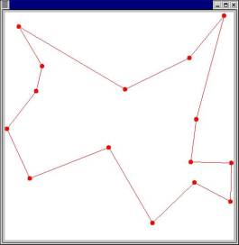

Now that Wile has a dessert map, it is time to set a trap. The reasoning behind this trap is that if the RoadRunner is so fast, then it must need a lot of energy. Thus a way of catching the RoadRunner is to lure it into spending more energy than it gains.
Wile has bought a huge bag of corn from ACME. Using the excellent map that we have previously generated for Wile he will now attempt to place 15 portions of corn in a way so that the shortest possible path between all corn-portions is longer than the energy obtained from the corn allow the RoadRunner to traverse.
The RoadRunner can run 200 km on each portion of corn, so now we need to calculate the minimum distance between the 15 portions that Willie has placed and see if this is longer than 3000 km, in which case Wile can eat.

The shortest route for the race trap
Implement a parallel branch-and-bound algorithm to solve the Traveling Salesman Problem. You can base your algorithm on the sequential version given to you. Your code should use Intel Cilk++ Software Development Kit. The code should be able to run on any number of CPUs, and the results must always be the same regardless of the number of CPUs used. If you want to implement another algorithm than the branch-and-bound algorithm to solve the Traveling Salesman Problem, you should contact us first.
A report should be made that describes the various choices that has been made, as well as individual techniques that has been applied to improve performance. The performance impact of each the applied techniques should be documented. In addition, the scalability of your implementation and the achieved performance should be discussed. Use Cilkscreen Race Detector and Cilkview Scalability Analyzer in Intel Cilk++ Software Development Kit to analyze your implementation.
Any optimization may be applied, but the result should be correct (ie. give an reasonable answer) and independent of the number of nodes that are used to achieve the solution. Any optimization that is applied must be thoroughly described.
You must follow the instructions given in the group session (slides available on fronter). If the requirements given there are not met, the hand-in will not be accepted.
The deadline is Thursday, October 18th, 24:00
Lars Ailo Bongo, Brian Vinter, modified by Espen S. Johnsen, Lars Tiede, Phuong Ha.